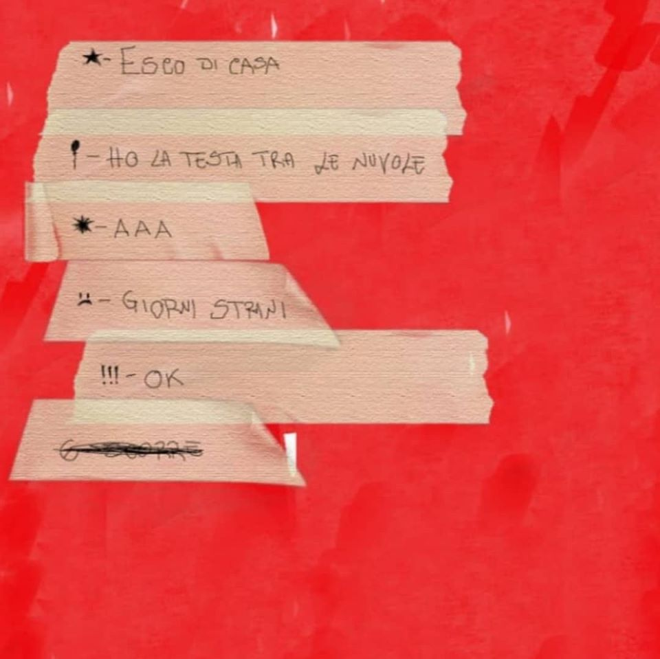

POST-IT EP è il filo conduttore che lega le frasi a metà, i messaggi mai consegnati, le cose da fare e tutti quei pensieri accumulati nell’intimità delle pareti di casa.
Le parole frammentate sparse da tempo sui foglietti colorati, come in un puzzle trovano la loro composizione definitiva in versi che nati da post-it diventano POST-IT EP.
In POST-IT EP ci sono tutte le stanze che ho macchiato con l’inchiostro, c’è anche un po’ di disagio, quello che viviamo nel nostro tempo liquido, ma soprattutto ci sono io.
